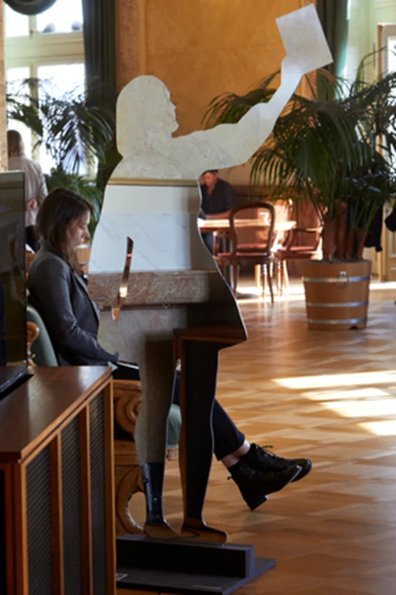
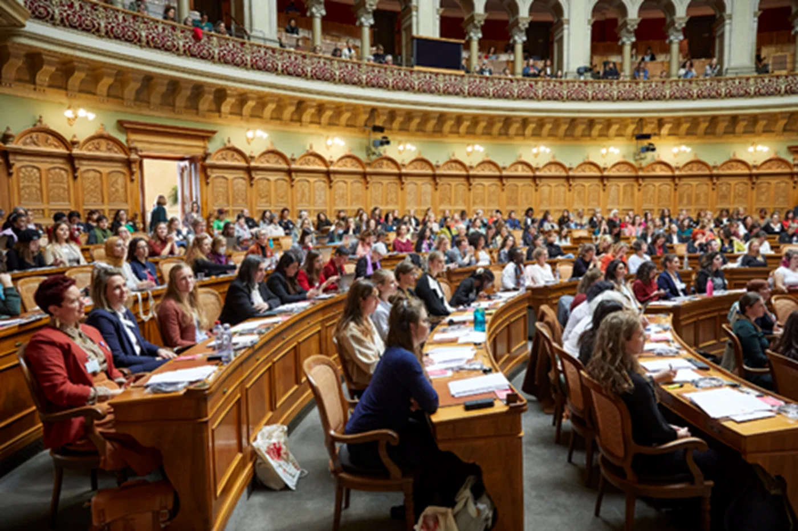
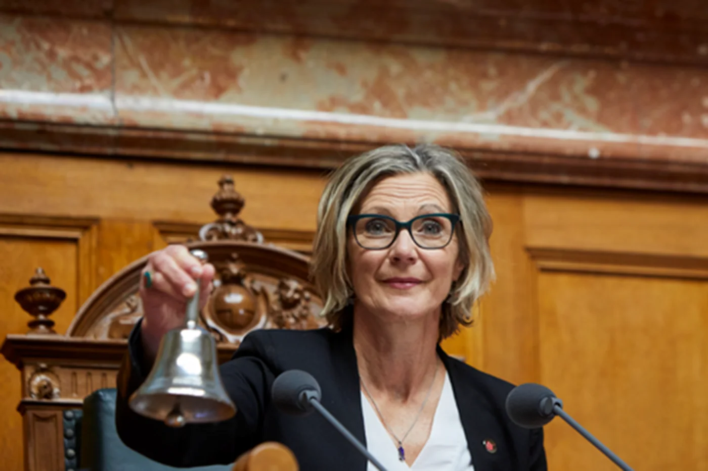
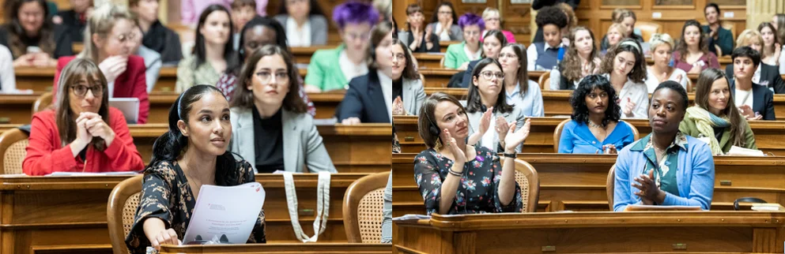
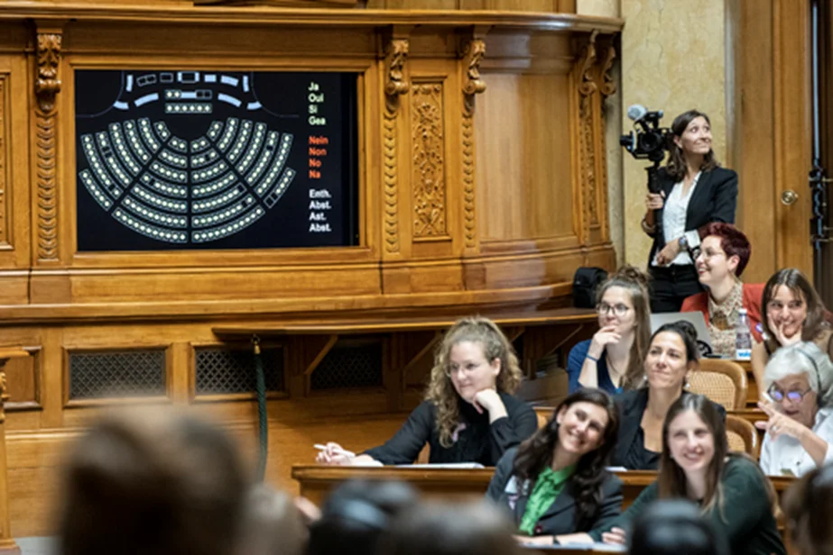
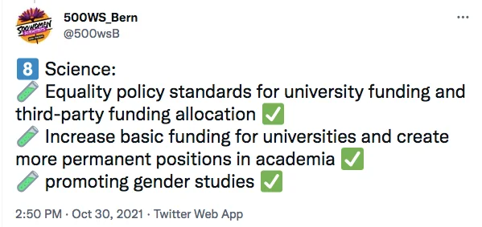
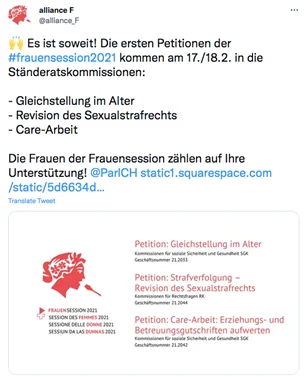
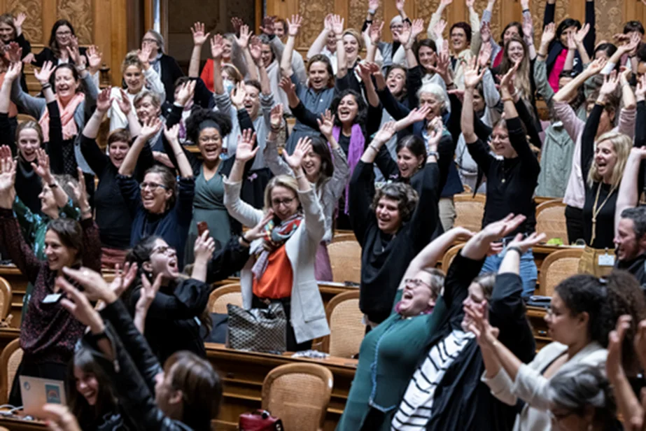

Frauensession 2021 - Can two days, 246 women, 77 polls change things for the better?

The second Frauensession took place in the Bundeshaus (parliament building) between October 29 and 30, 2021, organized by Alliance F, a non-partisan women's federation, in collaboration with other Women's associations. More than 240 elected women from all political parties (except for the ultra-conservative right-wing SVP), but also women representing society and language regions participated. They discussed over 70 items on the agenda and passed a total of 23 motions in the format of an ordinary parliamentary session. I attended it online (it felt a bit like watching a soccer match) and got quite enthusiastic. In its preparation, I was also allowed to participate in a consultation of the Commission for Science. However, I still struggle in understanding what it actually is, this Frauensession.
Photo credits: Copyright Yoshiko Kusano/Monika Flückiger/alliance FProbably it’s best to look back in time to better understand the present. The first Frauensession was held in February 1991, 20 years after the nationwide achievement of women's rights to vote and resulted in a catalogue of demands. It's strange when you look at it - these items on the 1991 list seem so absolutely self-evident today, things that no one would question today. Ranging from pensions independent of marital status to replacement of earnings during maternity leave, equal pay for equal work, better representation of women in political bodies, all-day schools and after-school childcare, and women's right to self-determination over their bodies, these “privileges” we tend to take for granted had to be fought for very hard, and were achieved in Switzerland even later than in neighbouring countries. This peak period of the women's rights movement culminated in the legendary women's strike with the motto “Wenn frau will, steht alles still” ("If woman wants, everything comes to a halt") on 14 June of the same year, in which hundreds of thousands of Swiss women took part.
Although progress has been made in the 30 years since, it is clear that many of the demands of that time have still not been met. For instance, the cost of abortion in Switzerland is covered by the basic insurance, which is very progressive and practically unthinkable in my country of origin. On the other hand, farmers’ wives are completely dependent on their spouses when it comes to the issue of social security and retirement pensions. As is sufficiently well known, there is still a lot of room for improvement of childcare in Switzerland, to put it kindly. Finally, when it comes to the core interests of our group, the situation of women scientists is lamentable, as we have repeatedly reported. So, 30 years later, another Frauensession was held.

The full hall in the Bundeshaus during the Frauensession. Photo credits: Copyright Yoshiko Kusano/Monika Flückiger/alliance FAccording to the opening address by State Councillor Maya Graf of the Greens, the goal of the Frauensession was to "discuss and adopt a detailed list of demands, including amendments to the law, for the attention of the Federal Parliament [...]. This will oblige the National Council and the Council of States to decide on our very concrete demands" (my own translation from the YouTube recording). When I watched it live on YouTube, it felt very much like a real parliamentary session to me (not that I had ever attended one), but the legislative power of the Frauensession is definitely limited, to put it kindly, and it has more symbolic than political importance. However, the visibility should not be discounted, and also the fact that such a diverse range of women with very different political and ideological backgrounds sit down together and work out a list of specific demands to the government. This suggests very broad support across society and political parties.

State Councillor Maya Graf of the Greens held the opening address at the Frauensession. Photo credits: Copyright Yoshiko Kusano/Monika Flückiger/alliance FThe first thing I noticed when the camera swept through the plenary hall of the national council was the diversity of women, unusually many young and very old, POC and known faces of female Swiss politicians. Wildly colourful hair and clothes! What a pleasant change to the typical assemblies of old white men in dark grey suits! The enthusiasm and joy of being there and participating in this historical moment was visible on the faces. It must perhaps be refreshing even for hard-core politicians to leave behind petty party interests for two days and work towards a constructive, solution oriented goal!

Photo credits: Copyright Yoshiko Kusano/Monika Flückiger/alliance FSurely I would overwhelm your attention if I were to list all 23 petitions, important as they are. Therefore, I will focus on the issues that seem most pertinent to our group and on some that are of too much social importance not to be addressed at least to some extent.
End discrimination at work
The petition “Equal opportunities in working life” reflects well the crux of the matter. I would even say that it is the “mother of all Frauensession petitions”, and it was unanimously accepted by all women present. Without appropriate childcare, no gender equality can be achieved (don’t men also have children, one might ask? - This is a critical point that definitely needs to be changed, but one must also realise that, as a society, we are not there yet). This petition also includes the demand for equal times of paid parental leave for both parents, and that natural persons are taxed irrespective of their marital status. Currently, married or registered couples are taxed based on the sum of both incomes (which discriminates against couples where both partners earn a similar income). The demand to revise the Gender Equality Act and create an independent federal authority to enforce equal pay (including obligation for wage transparency from a company size of 50 employees), was also unanimously accepted. The petition for the creation of a Federal Office for Gender Equality yielded 4 votes against and 3 abstentions. The lamentable situation of women in agriculture is reflected in the fact that three petitions were concerned with ameliorating their situation.
Valuing care work
The petition to subject work in private households to the Labour Code was unanimously accepted. However, the petition for equality in old age - this really costs money and thus attracted the opposition of neoliberal women, had 5 votes against and 8 abstentions. Crediting child-rearing and other types of and care work for pensions: Essentially, only paid employment is pension-building; care work is only taken into account under certain circumstances and within narrow limits, which is why women's pensions often do not provide a living wage. This has to be changed.
Violence against women
Three petitions were concerned with violence against women. The demand to spend 0.1% of the GDP for protection against gender-based violence is certainly necessary - compared to Europe, Switzerland is not doing so well in terms of the number of femicides per population. In 2015, it was the Western European country with the most femicides. This petition was met with a lot of approval, also the one concerned with forming national campaigns to raise awareness of and prevent gender-based violence and violence in the social environment. What I really cannot get my head around is that 6 women voted against the demand to update law enforcement and revise the Sexual Offences Act, and five abstained from the vote. The demand here is to formulate the law concerning sexual assault and rape in a gender-neutral way. Did you know that in Switzerland only vaginal penetration is considered rape? Thus, by law, men cannot be raped at all. Further demands were to provide sufficient resources to train specialized personnel and staff and sensitize law enforcement and judicial personnel to combat victim blaming (a requirement of the Istanbul Convention, which Switzerland ratified in 2017). Perhaps it is the "yes means yes" rule that is so contentious? It requires mutual consent as a prerequisite for every sexual act and makes all those without consent is punishable by law. Well, where would that get us!

Voting display at the Frauensession. Photo credits: Copyright Yoshiko Kusano/Monika Flückiger/alliance FDigitalization and STEM jobs
The next two petitions head more specifically in our direction. The petition “Integrate gender perspective in the ‘Digital Switzerland’ strategy” demands that standards on non-discriminatory algorithms must be included in the new strategy to prevent gender bias or other discriminatory biases. In addition, the algorithms must be transparent in order to be able to eliminate the current biases. All bodies involved in the development and implementation of the ‘Digital Switzerland’ must be made up of at least 30 per cent women, and efforts should be made to inspire more girls and women to take up STEM professions. "’50/50’ in STEM professions: Increase the proportion of women” demands that quantitatively measurable goals are anchored and measures are defined, which must be evaluated regularly. All measures, both existing and new, are to be reviewed for effectiveness. While the first petition was not very controversial, the second had 6 no votes and 13 abstentions.
And finally - universities and higher education
The petition “Equality policy standards for university funding and third-party funding” is certainly of great importance and 500 Women Scientists in Switzerland will certainly follow this up. We were included in a meeting before the Frauensession, in which we could bring up elements of our open letter. Here, the Federal Council is asked to condition federal financial contributions to universities to equality policy standards and to anchor these in the corresponding legal foundations. This means that equality policy standards are binding for accreditation. Standards to combat sexism and discrimination, to deal with misconduct as an institution and to combat abuse of power and sexual harassment have to be developed and compliance must be monitored by means of quantitative and qualitative surveys. A core demand of our open letter was also taken up in this petition: the Federal Council has to establish an independent complaints body at national level to report, for instance, cases of sexual harassment or discrimination in the allocation of resources at universities and research institutions. The petition yielded a majority of yes votes, but also 2 no votes and 4 abstentions). Another petition, which aims at increasing basic funding and creating more permanent positions at universities, was also met with a little resistance (3 no votes, 6 abstentions). The fact that gender research is underrepresented in Switzerland prompted the petition to promote gender research at universities and higher education institutions. Economics, climate research, spatial planning, technology or medicine have always been studied from a "male" perspective, with the consequence that care work is insufficiently analyzed and excluded from scientific studies, technical innovations are geared to purely male standards and are not useful for women, and sometimes even dangerous, and drugs are often only tested on men. As a result, there is a lack of knowledge for effective political measures, because the research gaps only allow for insufficient decision-making.

What happened next? Directly after day 2 of the Frauenession on October 30, 2021, the petitions were handed to the parliament. On February 7, 2022, Alliance F announced on Twitter: “On the anniversary of women's suffrage, the Federal Councilors receive important mail: the 23 petitions of the #frauensession2021 . The tens of thousands of women behind the women's session are counting on your support to make #Gleichstellung a reality in Switzerland!” On February 17 and 18, some petitions were brought before the State Council (equality in old age, revision of the Sexual Offences Act, and crediting child-rearing and other types of and care work for pensions). Unfortunately, the State Council voted against the “yes means yes” principle.

As for the fate of the other petitions, it remains to be seen. Of course, certain demands will face strong headwinds from the conservative camp. At the very least, however, the councillors of the states and the federal councillors will have to address the demands.
In conclusion, I think I now better understand what the Frauensession actually is and I hope I could convey this information to you as well. Thinking about the recent history of the women’s movement in Switzerland, it becomes apparent that, today, we must not take for granted the successes of the fights of previous generations of women. These achievements need to be constantly renegotiated and their compliance closely monitored and vehemently insisted upon. As Maya Graf cited the chairwoman of the first Frauensession in 1991, Elisabet Blunschy-Steiner: “This is not an end point, but the beginning of a development in which we are in the midst of.” Please support us in participating in this movement!

Cheerfulness at the closing despite the seriousness of the issue. Photo credits: Copyright Yoshiko Kusano/Monika Flückiger/alliance FClaudia Kasper, PhD
Geneticist
https://ch.linkedin.com/in/claudia-kasper-81380ab0
From the 500 Women Scientists Bern-Fribourg archive. Originally published 27 March 2022.
Explore more stories